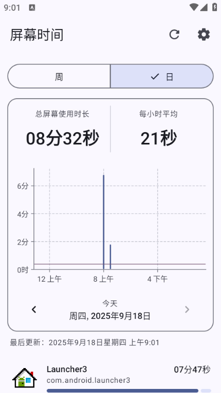
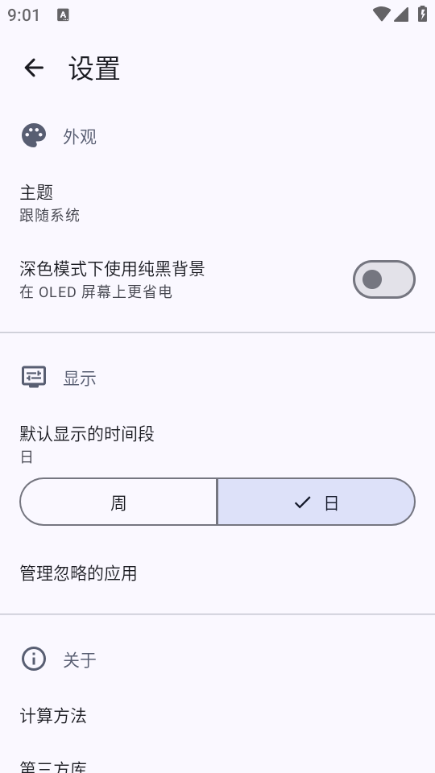

Screen Time 用了半个月，踩过的五个坑一次说清
以为装个统计软件就能管好手机？没这么简单——平均值口径会骗人、中位数藏在点击里、默认档位错了白看、权限被回收还不自知。五个真实坑，踩过才知道。
在 Screen Time官网 上一眼就被主界面的柱状图吸引了——我装它的动机也很简单：手机从早亮到晚，想看看时间到底花在哪了。第一次打开界面拍胸脯觉得"这软件也太好懂了吧"，结果接下来一周连着踩了好几个坑，差点以为软件坏了要重装。
其实这些问题都不是 bug，就是没人告诉你而已。
坑一：那个大数字我看了整整三天才发现读错了
主界面数据卡右边那个大号数字，我一开始以为不管哪天都是"每天平均几小时"——直到有天总时长显示 8 分多钟，那个大数字跳成了 21 秒，我盯着屏幕愣了好一会儿。
后来才搞明白：日视图的大数字是"每小时平均"，分母是 24；周视图的大数字才是"每日平均"，分母是 7。这两个数字回答的问题完全不一样，我把日视图的 21 秒当成了"今天平均每天才用 21 秒"来自我感动了整整三天。
日视图的每小时平均天然偏小——凌晨那八个小时零使用也被摊进了 24 小时，所以它不是"我今天用得多不多"的答案，而是"平摊下来每个小时用了多久"。真正判断"今天用得猛不猛"，得看逐小时柱状图，把柱子和那条红横线比，高出平均线越多的时段就是重灾区。
周视图的每日平均才是一周整体水平的靠谱指标。单看某一天容易被偶然行为误导，比如周末刷了一天短视频，单日数字爆高，但放到周维度里就被拉回了平均。
坑二：中位数功能我找了一周，原来藏在点击里
周视图的红横线默认是平均值，但平均值有个致命弱点——对极端值太敏感。某一天我爆用了 16 小时（赶项目熬夜写文档），那一根柱子直接把整周的红线拉高了一大截，平均值从 2 小时跳到了 4 小时。
那天我盯着界面吐槽了五分钟"这平均假得离谱"，甚至一度怀疑软件算法有问题，直到翻到文档才知道：1.4.0 版本起，点一下那个大数字就能在平均值和中位数之间切换——中位数才是"典型的一天"，它会把那根 16 小时的柱子完全忽略掉。
试了一下，点完数字瞬间跳到 2 小时，那才是我六天里真实的日常水平。平均值远高于中位数 = 这周有个别失控日；两者接近 = 这周用得很均匀。这个判断逻辑比单纯看数字实用多了。

坑三：默认时间段没设对，每次打开都白切换
我习惯每天睡前打开瞄一眼"今天用多久"，但每次进主界面都默认停在周视图，还得手动切一下到日视图——我以为这就是软件的固定逻辑，连续点了三天才想到"会不会有设置"。
果然在设置页的显示组里有个「默认显示的时间段」选项，可以选周或日。选了日之后，每次打开直接就是当天的逐小时柱状图，第一眼就知道今天用得怎么样，不用再多一次无意义的切换。
这个小选项看起来不起眼，但行为习惯类工具的"第一眼"很关键。想控制"今天"的人，每次先看到当天总量比先看到周平均更有行动提示作用——毕竟你想改的是今天，不是上周。

坑四：统计不到数据，以为软件崩了，结果是权限没了
有天打开软件，图表一片空白，总时长显示 0。我第一反应是软件更新搞坏了数据，差点卸载重装。重启手机才恢复正常。
后来才知道这不是什么数据损坏——安卓系统会在省电模式下回收 Usage Access 权限，一旦被回收，软件就看不到任何应用使用数据，图表直接归零。重启后权限会重新授权，但过几天可能又被系统收走。
排查顺序其实很简单：先去系统设置里看 Usage Access 权限还在不在，不在的话手动重新开一下就行。Screen Time文档里专门有一组统计不到数据的排查项，按顺序走一遍，九成情况不是真 bug。
坑五：装的版本老了，功能压根没有
我网盘下回来的是 1.2.1 版，后来发现文档里说的中位数切换、忽略系统应用这些功能都用不了，一度以为是我装的姿势不对。查了版本对照才知道：这些都是 1.4.0 之后才加的功能，1.2.1 只有基础的平均值和图表，根本没有切换能力。
不是我不会用，是版本差了好几个迭代。如果从官方下载时注意看一下版本号，很多疑问一开始就不会有。
防坑清单
最后汇总一下，下次新装可以直接对照：
- 先看版本号：1.4.0 以下没有中位数切换、忽略系统应用管理，别瞎找功能
- 设对默认时间段：每天复盘选日，每周回顾选周，减少无意义的切换
- 平均值和中位数都看看：点一下大数字就能切，别被极端日拉高的假平均骗了
- 权限被回收不是 bug：图表归零先去系统设置查 Usage Access，重启能恢复
- 日视图数字别看错：每小时平均 = 当天总时长 ÷ 24，不是"平均每天"
其实知道这些之后，Screen Time 就相当省心了——剩下的就是每天花一分钟瞄一眼逐小时柱状图，看看哪个时段又没忍住。这套资料在 GitHub、Gitee 和 GitCode 三个仓库都能拿到，国内访问选 Gitee 或 GitCode 更快一些。